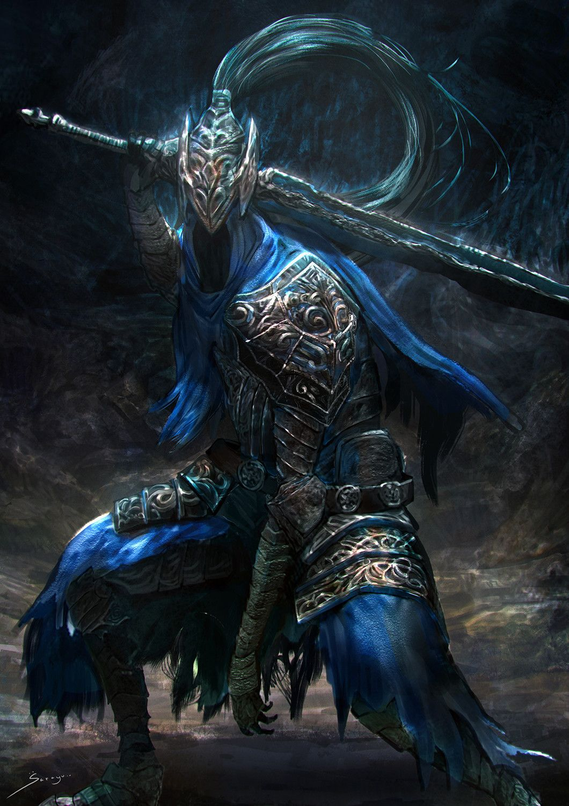

Sir Artorias, también conocido como el Caminante del Abismo, era uno de los Cuatro Caballeros de Gwyn.
Artorias portaba una armadura distintiva, así como el Anillo del lobo, y blandía un espadón y un gran escudo.
Se sabe que era amigo de la Gata Alvina del pacto Cazador de los bosques, y Sif el Gran lobo gris era su compañero, quien ahora protege su tumba y conserva el anillo Pacto de Artorias.
Artorias cazaba a los Espectros Oscuros y fue capaz de atravesar el Abismo con el poder de su anillo, el cual obtuvo tras hacer un pacto con las criaturas del lugar,
evitando ser tragado por la oscuridad, aunque su espada quedó maldita en el proceso. En reconocimiento a sus acciones, fue recompensado con uno de los antiguos tesoros de Anor Londo,
un colgante de plata que le permitiría bloquear la oscuridad del Abismo.
Cuando Oolacile fue segada por el Abismo creado por Manus, Artorias y su compañero lobo Sif viajaron allí con el objetivo de salvar a la secuestrada Princesa Anochecer.
Sin embargo, fueron superados por las fuerzas de la oscuridad, y Artorias se sacrificó para proteger a su fiel compañero Sif usando su escudo, erigiendo una barrera mágica alrededor del joven lobo, bloqueando los innumerables ataques hasta llegar al punto de romperse su brazo izquierdo.
Consumido por la oscuridad, el caballero fue corrompido junto a su espada previamente maldita.
Artorias es derrotado finalmente por el No muerto elegido en el coliseo de Oolacile. Su tumba, marcada con su espadón, se encuentra en el Jardín Tenebroso y es custodiada por Sif y Alvina junto a su grupo de Cazadores del bosque.
Su legado como héroe perduró durante siglos. En el reino de Lothric existía la Legión de no muertos de Farron, comúnmente conocidos como los Vigilantes del Abismo. Compartían la sangre del lobo, y se dice que sus almas estaban unidas y eran una con la del "maestro de la sangre del lobo".
Empuñando espadones inspirados en el suyo, y luchando con un estilo ferozmente salvaje, la Legión libró una lucha constante contra las abominaciones del Abismo, a las que su maestro había combatido siglos atrás.